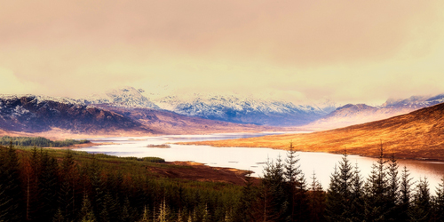

Lochquarry Outdoor Centre is set in acres of land in the heart of the majestic Argyll hills. On our doorstep is not only magnificent scenery, but also a breath-taking selection of outdoor and adventurous activities.
With activities designed to meet the needs of all ages and experiences of young people, Lochquarry truly brings adventure to everyone.
| Land Activities | Water Activities | Rope Activities |
|---|---|---|
| Hillwalking | Kayaking | Climbing | Archery | Canoeing | Abseiling |
| Orienteering | Power Boating | Pole Climbing |
| Axe Throwing |
Full details on each activity can be found on the respective page.
‘We had a great time and loved all the different activities that we did’ - 8th Gourock Guides
‘Thank you to all the staff who worked so hard, in awful weather, to make sure that all the pupils had an amazing experience’ - Mrs Kahn, Hillend Primary School